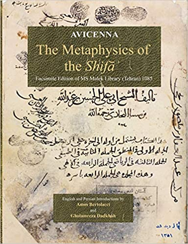
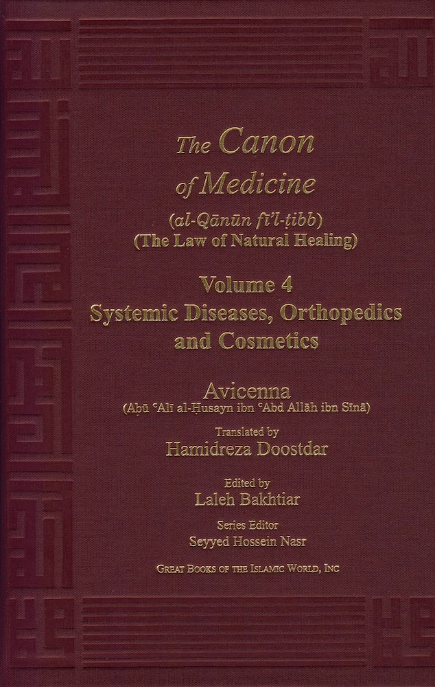
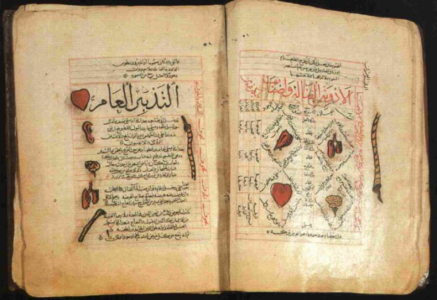

“Medicine is the science by which we learn the various states of the human body, in health, when not in health, the mean by which health is likely to be lost, and when lost, is likely to be restored to health.”
Ibn Sina was a Persian polymath and one of the most famous physicians from the Islamic Golden Age. He is known as the father of early modern medicine and his most famous work in Medicine called “The Book of Healing”, which became a standard medical textbook at many European universities and remained in use up to the recent centuries. His Book of “The Canon of Medicine” was reprinted in New York in 1973 that shows his works and theories are still alive and in use Ibn Sina also had written on astronomy, alchemy, geography and geology, psychology, Islamic theology, logic, mathematics, physics and poetry. There have been various international congresses and festivals in different countries during 1937 to 2004 and also publication of about 750 articles and books in different European languages during 1906 to 2006 about him and also the formation of the scientific educational network called “Avicenna Knowledge Centers” (A.K.C.) over the Europe as well as the World Network of Medical Sciences Data Bank under the name of Ibn Sina. There are some international prizes in Ibn Sina’s name including one by UNESCO. His birthday is “National Doctor’s Day” in Iran.
It is believed that he was extremely genius with a remarkable IQ. Ibn Sina memorized the entire Quran by the age of 10 and became a knowledgeable physician at the age of 16 and introduced new methods of treatments by the age of 18. During his medical career he treated many patients including some governors and politicians and ordinary people without asking for payment. He was a hard working person and his friends advised him to slow down and take the life easy but he answered “I prefer a short life with width to a narrow one with length”.
Ibn Sina wrote a medical encyclopedia in five volumes named “The Canon of Medicine (Al-Qanunfi’t-Tibb)”. The first volume contains theories on the four elements of blood, phlegm, yellow bile, and black bile. This volume also includes anatomy, etiology and symptoms, hygiene, health and sickness, death, clinical and therapeutic classification of disease, regimens and dietary treatments. The second volume is a “MateriaMedica,” and the third volume covers “Head-to-Toe Diseases”. Volume 4 explains “Diseases That Are Not Specific to Certain Organs” such as fevers and other systemic and humoral pathologies, and the fifth volume gives information on “Compound Drugs”.
Ibn Sina had a book called “On the Science of the Pulse”, which demonstrated the most detailed clinical description on the characteristics of the pulse that had been ever written. The pulse section consists of techniques for feeling the pulse. In this book he explained the certain types of arrhythmias such as atrial fibrillation, premature and dropped beats and more than fifty different pulses.
The British Orientalist, Edward G. Browne opined that “Ibn Sina was a better philosopher than physician" as Ibn Sīnā wrote many books and articles on Islamic philosophy, including subjects like logic, ethics, and metaphysics that some of them were in Persian.
Ibn Sina became ill with colic symptoms and shortly died in June 1037. He is buried in Hamadan, Iran.
The most famous works of Ibn Sina include:
- Al-isharatwa al-tanbihat (Remarks and Admonitions) on Logic.
- Al-Qanunfi’l-tibb (The Canon of Medicine), which is an Encyclopedia of medicine.
- Risalah fi sirr al-qadar (Essay on the Secret of Destiny) on Reason and Tradition in Islamic Ethics.
- Kitab al-Shifa’ (The Book of Healing) on philosophy.
- Kitab al-Najat (The Book of Salvation) on Psychology.
- Danishnama-i ‘Alai (the Book of Knowledge for [Prince] ‘Ala ad-Daulah) which is a scientific vocabulary in Persian on logic, metaphysics, music theory and other sciences of his time.
- 
- 
- 